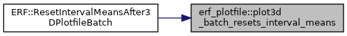
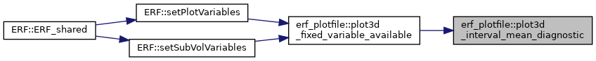
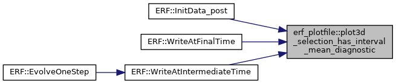
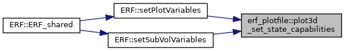

Classes | |
| struct | Plot3DSelectionCapabilities |
| What the active run can supply to a 3D plotfile. More... | |
Functions | |
| void | plot3d_set_state_capabilities (Plot3DSelectionCapabilities &caps, const MoistureComponentIndices &mi, const int qstate_moist_size, const int qstate_size) |
| Record the conserved-state layout of a run on its capabilities. More... | |
| bool | plot3d_batch_resets_interval_means (int plotfiles_written, bool interval_diagnostic_consumed, bool compute_mean_vars, const std::string &reset_mode) |
| int | plot3d_q_conserved_component_index (const int q) |
| Conserved-state component holding the q-th moist variable, or -1 if q is outside the fixed RhoQ1..RhoQ11 layout. More... | |
| int | plot3d_conserved_component_index (const std::string &name) |
| Conserved-state component behind a raw state variable name ("density", "rhotheta", "rhoQ3", ...), or -1 if the name is not one. More... | |
| bool | plot3d_fixed_unconditional_diagnostic (const std::string &name) |
| Diagnostics that every run can write, moist or dry. More... | |
| bool | plot3d_interval_mean_diagnostic (const std::string &name) |
| Whether a named 3D plot variable can be written by this run. More... | |
| bool | plot3d_selection_has_interval_mean_diagnostic (const amrex::Vector< std::string > &names) |
| bool | plot3d_fixed_variable_available (const std::string &name, const Plot3DSelectionCapabilities &caps) |
| bool | plot3d_needs_pressure (const amrex::Vector< std::string > &names) |
| Whether any requested variable needs the pressure field computed. More... | |
| amrex::Vector< std::string > | plot3d_selected_particle_count_names (const amrex::Vector< std::string > &requested, const amrex::Vector< std::string > &configured) |
Function Documentation
◆ plot3d_batch_resets_interval_means()
|
inline |
Referenced by ERF::ResetIntervalMeansAfter3DPlotfileBatch().

◆ plot3d_conserved_component_index()
|
inline |
Conserved-state component behind a raw state variable name ("density", "rhotheta", "rhoQ3", ...), or -1 if the name is not one.
Referenced by plot3d_fixed_variable_available(), and ERF::Write3DPlotFile().


◆ plot3d_fixed_unconditional_diagnostic()
|
inline |
Diagnostics that every run can write, moist or dry.
Referenced by plot3d_fixed_variable_available().

◆ plot3d_fixed_variable_available()
|
inline |
Referenced by ERF::setPlotVariables(), and ERF::setSubVolVariables().


◆ plot3d_interval_mean_diagnostic()
|
inline |
Whether a named 3D plot variable can be written by this run.
The order of the tests below is the order of authority: raw state components answer from the state layout, moisture variables answer from the active scheme's index map, optional diagnostics answer from their storage flag, and anything left is an always-available diagnostic.
Referenced by plot3d_fixed_variable_available().

◆ plot3d_needs_pressure()
|
inline |
Whether any requested variable needs the pressure field computed.
Referenced by ERF::Write3DPlotFile().

◆ plot3d_q_conserved_component_index()
|
inline |
Conserved-state component holding the q-th moist variable, or -1 if q is outside the fixed RhoQ1..RhoQ11 layout.
Referenced by plot3d_conserved_component_index().

◆ plot3d_selected_particle_count_names()
|
inline |
Referenced by ERF::setPlotVariables(), and ERF::Write3DPlotFile().

◆ plot3d_selection_has_interval_mean_diagnostic()
|
inline |
Referenced by ERF::InitData_post(), ERF::WriteAtFinalTime(), and ERF::WriteAtIntermediateTime().

◆ plot3d_set_state_capabilities()
|
inline |
Record the conserved-state layout of a run on its capabilities.
Every output path that selects raw state names must describe the state the same way, so the three fields are filled here rather than at each call site.
- Parameters
-
caps Capabilities to fill in. mi The active scheme's component/diagnostic map. qstate_moist_size Conserved components in the moist window (Microphysics::Get_Qstate_Moist_Size()). qstate_size All conserved components the microphysics adds, moist window plus non-water species (Microphysics::Get_Qstate_Size()).
Referenced by ERF::setPlotVariables(), and ERF::setSubVolVariables().
